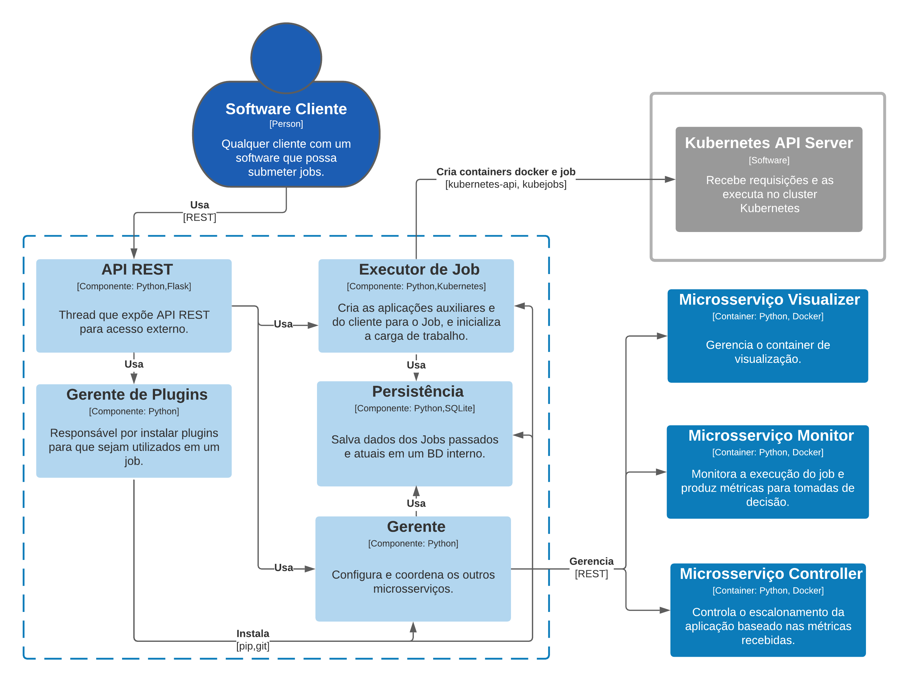
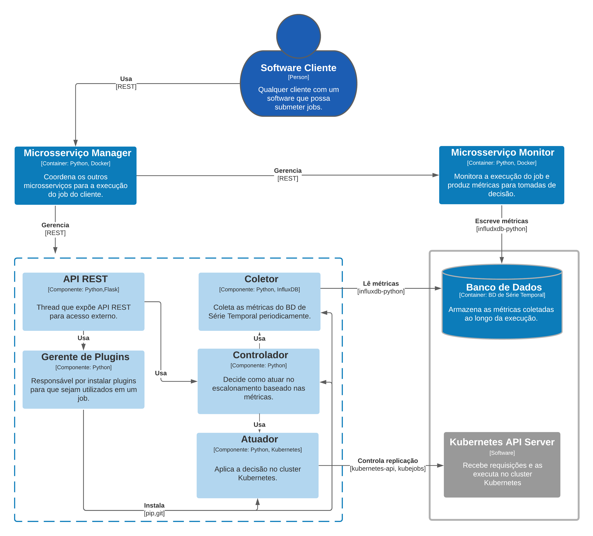
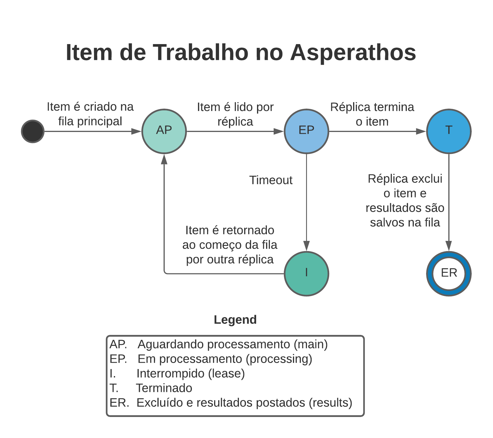

Documento Arquitetural do Asperathos
Autores
Este documento foi produzido por Diego Alves Gama.
- Matrícula: 117110223
- Contato: diego.gama@ccc.ufcg.edu.br
- Projeto documentado: https://github.com/ufcg-lsd/asperathos
Descrição Arquitetural – Asperathos
Este documento descreve a arquitetura do projeto Asperathos. Essa descrição foi baseada principalmente no modelo C4.
Descrição Geral sobre o Asperathos
O Asperathos é uma plataforma de controle e orquestração para aplicações replicáveis em ambientes de nuvem (como AKS, AWS ou GKE). A sua principal função é controlar a replicação de uma aplicação na infraestrutura de nuvem escolhida, de maneira a equilibrar métricas configuradas nele, sejam elas de Quality of Service (QoS) geral ou específicas da aplicação.
Por exemplo, para um software executando na AWS, e que analisa remessas de exames médicos com prazos, o Asperathos pode controlar as réplicas do software de forma a atender à demanda dentro do deadline, mas também de maneira a minimizar o custo da infraestrutura.
Contexto
O Asperathos é imerso em um contexto naturalmente de nuvem. Seu objetivo é atender às necessidades de controle de pessoas que desejam que suas aplicações sejam controladas para garantia de QoS, e apenas para aplicações replicáveis. Isto é, aplicações que ou sejam stateless ou cujo estado interno não atrapalhe replicação automática de si mesma.
Assim, o Asperathos é usado por um cliente interessado através de algum software que o utilize, e que pode submeter um arquivo especificando o job e como ele acontecerá. Aqui, um job representa uma carga de trabalho a ser executada em batch (uma carga por job, com deadline) ou em streaming (em sequência sob demanda do cliente, por tempo indefinido).
Após isso, o Asperathos recebe o job, e começa a se comunicar com algum cluster Kubernetes acessível para controlar a replicação. O Kubrentes e aplicações auxiliares do Asperathos criadas nele enviam periódicas informações sobre o job e sobre a aplicação, e utilizando elas o Asperathos decide se deve haverá scale-up (aumento de réplicas) ou scale-down (diminuição de réplicas) de forma a gerir QoS e economia de recursos, e gerencia essas aplicações auxiliares.
É também possível que o cliente utilize suas próprias implementações específicas para os componentes do Asperathos, mas esses detalhes são mais profundos e serão tratados em seguida. O diagrama abaixo ilustra essa interação entre os contextos

Containers
O Asperathos tem quatro principais containers que compõem a aplicação. Há o manager, o controller, o monitor e por fim o visualizer que é opcional e não é necessário para o funcionamento básico do Asperathos. Cada um deles é implementado em Python e containerizado em Docker, e todos se comunicam entre si através de suas respectivas API REST. Entraremos em detalhes neles abaixo.
Além dos containers principais, há também três containers auxiliares que são criados no cluster Kubernetes onde a aplicação do usuário executará. Esses microsserviços são: um Banco de Dados de Série Temporal (InfluxDB por padrão), uma Fila de Mensagens (Redis por padrão), e um Dashboard Analítico (opcional e Grafana por padrão).
O objetivo do Banco de Dados é armazenar métricas sensíveis ao tempo; o da Fila de Mensagens é de organizar os itens de trabalho e seus status (prontos, em processamento e processados); e por fim o do Dashboard Analítico opcional é prover uma visualização conforme é alimentado pelo Visualizer.
Esses containers são importantes para gerenciar dados e métricas que serão posteriormente utilizados pelos containers principais do Asperathos. O diagrama a seguir ilustra como os containers se relacionam.

Manager
O manager é o container mais complexo, pois gerencia todos os outros. Ele é o único container que se comunica diretamente com o usuário, e delega tarefas para os outros containers a depender das rotas acessadas em sua API REST.
Quando o manager recebe um Job por parte do cliente, ele utiliza a API do Kubernetes para acessar o cluster (cujas credenciais foram passadas na sua configuração) e lá inicia os microsserviços auxiliares, passa configurações relevantes para os outros containers e cria o KubeJob para a aplicação do usuário. O Job Kubernetes ou KubeJob é um tipo de recurso Kubernetes que permite que a aplicação do usuário só termine quando finalize toda a carga de trabalho. Assim, o Job executa e o Asperathos pode controlar seu escalonamento.
Os endpoints do manager são estes abaixo:
/submissions, POST com JSON do Job e que retorna o id do Job./submissions/:id/stop, PUT para parar o Job com aquele id./submissions, GET que lista todos os Job já submetidos./submissions/:id, GET que retorna status do Job com aquele id./submissions/:id/log, GET que retorna os logs daquele Job.
Monitor
O monitor é um container que observa o progresso do Job conforme a aplicação lê, processa e conclui itens de trabalho. Através dessas métricas de progresso ele gera outras métricas, as quais ele armazena no Banco de Dados de Série Temporal.
Os endpoints do monitor são estes abaixo:
/monitoring/:app_id, POST com JSON de configurações para monitorar o Job daquele id./monitoring/:app_id/stop, PUT para parar o Job com aquele id.
Controller
O controller é um container que lê métricas do Banco de Dados periodicamente e as utiliza para decidir se deve atuar ou não. Ele atua se comunicando com o Kubernetes para aumentar ou diminuir uma certa quantidade de réplicas da aplicação.
Os endpoints do controller são estes abaixo:
/setup, POST com JSON contendo as restrições de recursos que as réplicas da aplicação do cliente podem usar./scailing/:app_id, POST com JSON de configurações para que o controller atue no Job com aquele id./scailing/:app_id/stop, PUT para que o controller pare de atuar naquele Job com aquele id./scaling, GET que retorna o status atual detalhado do controller.
Visualizer
O visualizer é um container que gerencia o Dashboard Analítico, e que lê periodicamente o Banco de Dados para alimentar o Dashboard com as métricas. Ele é opcional.
Os endpoints do visualizer são estes abaixo:
/visualizing, POST com JSON contendo configurações para que o visualizer inicie a visualização de um Job./visualizing/:id/stop, PUT para que o visualizer pare a visualização no Job com aquele id./visualizing/:id, GET que retorna a URL do Dashboard.
Componentes
Todos os containers do Asperathos seguem uma arquitetura de plugin. A maior implicação disso, é que não há detalhes muito minunciosos de implementação para cada um, visto que são feitos para comportar diversas possibilidades de plugin. Eles, entretanto, devem seguir responsabilidades bem definidas, como falamos na seção anterior, mas que separaremos aqui componente a componente de cada container.
Cada container tem dois componentes em comum: a API REST (como discutimos) e o gerente de plugins. O gerente de plugins é o responsável por instalar as opcões de plugin e decidir qual usar de acordo com a configuração do Job. Abaixo, estão os componentes diferenciais de cada um.
Manager
Como vimos, o Manager coordena os outros containers e também o Job. Ele consegue fazer isso dividindo suas responsabilidades entre três componentes: o executor de Job, o gerente e o componente de persistência. Cada componente desses é um plugin.
O executor de Job é o responsável por se comunicar com a API da infraestrutura (e.g. Kubernetes) para poder criar e configurar as aplicações auxiliares e a aplicação do cliente no cluster, bem como inicializar a carga de trabalho na Fila de Mensagens para que o Job possa começar.
O gerente é o responsável por gerenciar os outros containers em si. Ele repassa as configurações do Job que são específicas a cada um, e os atualiza sempre que um Job novo é inciado e também quando é terminado. Ele faz isso se comunicando com a API REST de cada um.
O componente de persistência não tem um nome específico, mas é responsável por persistir dados do Job em um banco local SQLite. Dessa maneira além de salvar dados sobre o Job atual, o Manager consegue manter histórico dos Jobs anteriores.

Monitor
Já o Monitor tem responsabilidade de coletar as métricas e publicá-las no BD. Entretanto, o Monitor não possui diversos plugins nele, apenas um. A lógica de como o Monitor lida com tudo pode variar bastante de acordo com a implementação de plugin dele, mas é indicado que além de coletar e publicar ele faça um processamento das métricas. Isso é útil para converter, por exemplo, a contagem de itens de trabalho processados em um fluxo de processamento em itens por segundo.
Assim, nós teríamos três componentes, os quais devem fazer parte do mesmo plugin.
O coletor é responsável pela coleta. Não só pegar as métricas, como também decidir de onde elas vêm. Por padrão utilizamos apenas a Fila de Mensagens, mas outras fontes podem ser utilizadas. Por exemplo: uso de CPU/RAM dos nós do cluster, coletados através da API do Kubernetes.
O processador utiliza as métricas para produzir novas ou refiná-las. Enquanto o coletor lê a quantidade de itens produzida, o processador é o responsável por utilizar isso e produzir a métrica de fluxo de itens por segundo. Ele pode também deduzir as distâncias de tempo entre cada item.
O publicador utiliza as métricas refinadas do processador para publicá-las no Banco de Dados de Série Temporal. Essa função é simples, e só precisa ser reimplementada quando o Banco de Dados é diferente. Por padrão, é o InfluxDB.

Controller
O Controller é responsável por decidir quando, como e com qual intensidade atuar no escalonamento das réplicas, baseado em métrias lidas no BD, e também aplicar a decisão. Ele divide essas tarefas em três componentes: o controlador, o atuador e o coletor. Cada um deles é um plugin.
O controlador é o componente de inteligência, e é responsável por decidir baseado nas métricas. Esse é o plugin de maior impacto do container e talvez da aplicação, pois afeta diretamente o progresso do job.
O atuador é responsável por se conectar com a interface da estrutura (i.e. API do Kubernetes) e aplicar as decisões do controlador. Essa função é simples, e só precisa ser reimplementada quando a Infraestrutura é diferente.
O coletor é quem lê as métricas do Banco de Dados de Série Temporal. Essa função é simples, e só precisa ser reimplementada quando o Banco de Dados é diferente.

Visualizer
O Visualizer, sendo responsável por gerir o Dashboard Analítico, é bem separado da lógica normal. Ele não possui componentes bem definidos e também possui apenas um plugin, que é o responsável por tudo.
Visão de Informação
O Asperathos tem consigo diversas informações que trafegam. Desde as configurações iniciais em JSON, até as métricas lidas pelos componentes. O essencial de se entender para um usuário do sistema, entretanto, é sobre o processamento do Job.
Uma vez que o Job é submetido, a carga de trabalho é preparada na Fila de Mensagens. Nesse componente estão três filas: fila main, processing e results. Essas filas representam os estados de cada item alocado nela, explicremos mais adiante.
Inicialmente, se o Job for do modo batch toda a carga é submetida para a fila main de uma única vez. Caso o Job seja do tipo streaming, o software cliente é quem tem responsabilidade de enviar os itens de trabalho à Fila de Mensagens, e então a fila main recebe itens indefinidamente enquanto o Job não for finalizado.
Assim que o Job inicia e a aplicação do cliente está pronta para processar itens, ela começa a ler itens da fila main. O item é lido e passado para a fila processing, onde ficará até ser finalizado. Uma vez que o item é finalizado, ele é removido, e o output do processamento é salvo na fila results.
Após se passar um tempo, determinado pelo cliente, com um item parado na fila processing ocorre um timeout. É então considerado que essa réplica da aplicação do cliente bloqueou em alguma das suas tarefas. O item é então retornado para o começo da fila main, e quando o cliente bloqueado finalizar ele não será capaz de publicar seus resultados à fila results, sendo forçado a passar para um próximo item na fila main.
O diagrama de informação abaixo ilustra essa mudança de estado de um item conforme ele muda de fila.

Contribuições Concretas
Foi feito um PR contendo os diagramas de contexto, container e informação. Como o repositório já possui documentação, a adição foi pouca para que os diagramas coubessem de maneira a agregar informação. Além disso, visto que a documentação foi produzida em Inglês no repositório, os diagramas tiveram de ser traduzidos.